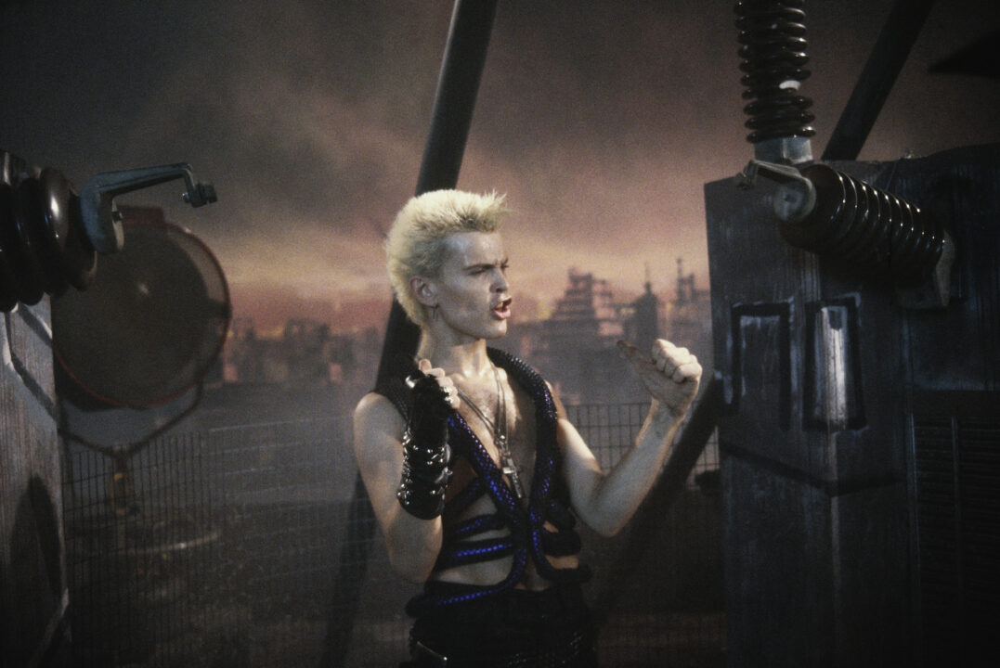
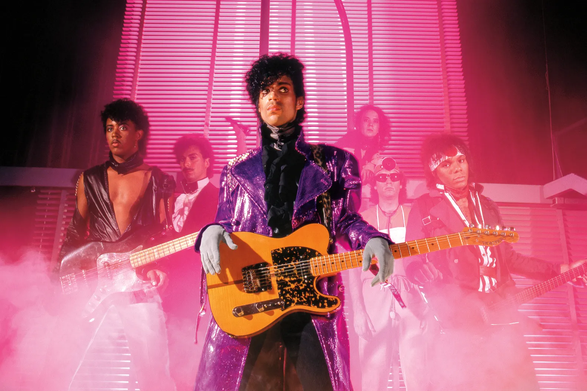

The audience for music videos is bigger than ever — even as the flagship music-video network keeps killing itself off
By Rob Sheffield
November 16, 2025
All the reports about the death of music videos have been wildly exaggerated. But that’s only fair, since wild exaggerations are exactly what music videos are all about. These days MTV and CMT might be going down in flames, but nobody can kill the dream of music videos. Why? They’re the best starmaking machinery the pop world has ever invented, the ultimate expression of rock-star fantasy, outliving all the countless predictions of their demise over the years. As one of the all-time great MTV stars once asked: Isn’t it ironic? Doncha think?
MTV debuted on August 1, 1981, which means it was probably August 2 when people started complaining MTV didn’t play music anymore. But really, MTV doesn’t play music anymore, and that’s nothing new.
Fans still devour videos, just as artists still love making them. They remain a phenomenally popular concept. As Lady Gaga said in 2010, when she dominated the VMAs, “God put me on Earth for three reasons: to make loud music, gay videos, and cause a damn ruckus.” Fifteen years later, Gaga is still making gay videos and still causing a ruckus. But MTV would rather just be excluded from this narrative.
The network just made headlines around the world when it announced it’s killing off its music channels in the U.K. and Europe. But meanwhile, back in the U.S.A., MTV keeps on doing what it’s been doing for years, which is cranking Catfish and Ridiculousness reruns. Even though MTV just pulled the plug on Ridiculousness after a mind-boggling 46 seasons, they’ve got enough episodes stockpiled to run forever. Jersey Shore: Family Vacation is still in production, eight seasons and counting—longer than the original version — with no escape in sight for these poor guido hostages; it’s the Hotel California of GTL.
MTV Classic still programs music around the clock, in oldies blocks like I Want My Eighties, Nineties Nation, Yo! Hip-Hop Mix, Total Request Playlist, or Metal Mayhem. MTVU and MTV Live have new music, MTV2 sticks to sitcom reruns, and VH1 makes sure nobody has to lie awake at night and wonder whatever happened to Nick Cannon Presents Wild N’ Out.
The country network CMT just announced the demise of its flagship show Hot 20 Countdown, the last surviving music program amid an endless boogie of Golden Girls and Mama’s Family reruns. Like MTV, it’s owned by Paramount, which just merged with Skydance Media. Last year, Paramount pulled the plug on the annual CMT Awards, after over two decades. It’s a cost-cutting corporate behemoth that keeps decimating its staff and zapping its archives the way Billy Idol blasted those zombies off the roof in the “Dancing with Myself” video.

Musician and singer-songwriter Billy Idol on set during filming of music video of 'Dancing With Myself', US, 1981. Photo by Brian D. McLaughlin/Michael Ochs Archives/Getty Images
But meanwhile, Spotify has just announced plans to start playing music videos in the U.S. and Canada, after trying it out overseas. Starting soon, listeners can decide whether to listen with or without the video, as Spotify moves in on the streaming market alongside YouTube. It’s a sign of the times, in a pivotal moment for music video.
MTV set off the music-video revolution in the Eighties, transforming pop culture. Prince, Madonna, Michael Jackson, and Duran Duran in the Hair Decade. Nirvana and Biggie and Alanis and Missy in the Nineties. The Y2K explosion of Britney, ‘NSync, and the Backstreet Boys, via Carson Daly and his Total Request Live fan armies. Beyonce, Gaga, Drake, Taylor in the 2010s. What a legacy. That’s why the network lives on in the cultural imagination — people remember it as the motherlode of music videos, even though it essentially stopped playing them years ago.
It was sheer desperation that turned MTV into the most innovative and adventurous phenomenon of its era. When it first hit the airwaves in 1981, fans went crazy for the whole concept — all day, all night, all music video. But that meant MTV had 24 hours to fill and nowhere near enough content to fill the pipeline. Nobody made videos in those primitive days, nobody except weird Brit poseurs and art freaks and thirsty postpunk eccentrics, so the network was forced to play them all. MTV never planned on starting a music revolution — they probably would have rather played the same generic corporate slop that was on rock radio at the time. But something strange happened—video sluts like Duran Duran, Culture Club, and Adam Ant became superstars in the American heartland (where kids had cable) even though radio wouldn’t touch them, and even though they didn’t play by any of the corporate rules. As Duran Duran’s Nick Rhodes told Rolling Stone in 1984, “Video to us is like stereo was to Pink Floyd.”
The early days of MTV were an anything-goes culture-clash spectacle, a chaotic swirl of different sounds and styles and genres. Just to pick the most obvious example, Prince was the ultimate MTV star, the whole video fantasy come to purple life. He got obsessed with watching the network early on in Minnesota, and made his classic 1999 under the spell of New Romantic synth tarts like Spandau Ballet and the Durannies. MTV played the hell out of “1999” and “Little Red Corvette,” when radio was too chicken. Everything that made Prince unacceptable to the rest of the pop world — his rebel-rebel flamboyance, his sexuality, his refusal to fit into categories, his experimental flakiness—made him a hero to the new MTV audience.

Prince 1999 Triple Threat Tour. Photography by Allen Beaulieu
David Bowie, who’d helped inspire all these artists with his groundbreaking 1970s videos, got more massive than ever shaking it to “Let’s Dance.” Van Halen made their own low-budget DIY video for “Jump” — the budget was just a few hundred bucks blown on beer and chips — but David Lee Roth and the video camera were a match made in rock & roll heaven. Cyndi Lauper became a new-model feminist icon leading her new wave parade through the streets in “Girls Just Wanna Have Fun.” Tina Turner strutted her stuff in “Ball of Confusion,” at a time when the rest of the music world had given her up for dead, leading to Private Dancer and all that followed.
Any veteran could get in on the party if they gave it some heart and humor, whether that meant Donna Summer dancing in waitress drag or Dean Martin crooning by the pool with pastel models or Robert Plant entering his tragically short-lived breakdancing era. Even the bearded Texas blues buzzards in ZZ Top, the most proudly unfashionable band around, became unlikely teen idols, just by embracing the absurdity of it all, with their white-fur guitars, and gender parody.
“Our audience grew up with us until the videos, and they were beginning to get a little long in the tooth. Then the videos came along, and now we’ve recaptured the 16-year-old girls. The 16-year-old girls!”
-Dusty Hill, ZZ.
For generations of fans, MTV was where you went for music videos (and where you went to complain that MTV wasn’t playing them enough). It’s where you turned for Yo! MTV Raps or Headbanger’s Ball, for 120 Minutes or IRS’ The Cutting Edge, for TRL or the VMAs. This network was what all pop culture aspired to be, with its own franchises in news, fashion (House of Style), comedy (The State), cartoons (Beavis & Butt-Head), reality trash, sports, politics, Andy Dick (The Andy Dick Show), everything. By the 1990s, when there wasn’t a single Top 40 station in the country playing the entire Top Ten, MTV was the most eclectic music source around, a nationwide 24-hour teenage riot of noise and chaos and cool. Nothing like MTV had ever happened before.
The irony is that MTV’s weirdness is what made it great — yet the network couldn’t wait to escape the weirdness and turn into a normal, respectable, boring network. They wouldn’t wait to quit playing videos, and graduate to the same lousy reality shows and sitcoms and movie reruns as any other basic-cable channel. The real breaking point came in 2004, when the network did the Super Bowl halftime show, with its infamous “wardrobe malfunction” disaster, leading to a federal clampdown from Colin Powell’s son at the FCC. That’s when MTV decided keeping a toe in the music biz was more trouble than it was worth — you promote all this IP you don’t even own, and where does it get you? After that, they went full-time into non-music reality soaps — even though nobody would have been interested in these shows if they hadn’t aired on MTV, with all the brand’s youth-culture cachet.
For the past couple decades, MTV has spent only a few hours a year remembering that it used to be a starmaker, with the annual Video Music Awards bash. There was a great moment a few years ago on the weekend of the VMAs when they played Friday After Next — not just a Friday movie, but a Friday Christmas movie, in freaking August. Just a very special way of reminding anyone just tuning in that MTV would rather play absolutely anything besides a music video.
For many years, videos totally depended on standard TV networks like MTV, VH1, CMT, BET, TNN, on down to The Box. (And can I get an amen for Pants-Off Dance-Off?) But the internet set the artform free. Fans now get their fix from YouTube, TikTok, any social-media brand that comes along. It’s never been easier for artists to get viral video moments out there fast. Hell, if you’re Taylor Swift, you can just put your “Fate of Ophelia” clip and your Life of a Showgirl lyric visualizers into movie theaters and for a blockbuster box-office hit. All the recent obituaries for videos are premature, just as all the hand-wringing over the decline of MTV seems extremely postmature. Music videos are pretty much a universally popular idea, as they always have been, for both fans and artists — but the delivery systems have always been rickety.
Obviously, everything is different for MTV now after the Paramount Skydance merger. Back when Paramount was a Hollywood studio, it got swallowed by the conglomerate Gulf & Western — or as Mel Brooks dubbed it in Silent Movie, Engulf & Devour. But in August, Paramount got engulfed and devoured by Skydance, in the deal that the FCC okayed only after Paramount’s CBS News made a $16 million cash payoff to the current president. When Stephen Colbert mocked this on the air — the word he used was “bribe” — they didn’t just terminate him, they pulled the plug on the entire Late Show franchise. Last year, Paramount casually erased decades of online archives from MTV, CMT, Comedy Central, and more. If you go clicking on MTVNews.com now, you get directed to an ad for Ridiculousness.
That means that the MTV legacy has less than ever to do with what remains of the network itself. One of MTV’s finest moments was Beavis and Butt-Head, two teenage American idiots who spent all their time on the couch insulting the video stars they saw on MTV. (“These guys live on the edge.” “Yeah, the edge of Wuss Cliff!”) But when the network rebooted the show in 2011, it was telling that they couldn’t find any music videos for these guys to watch, because—though artists were still making acclaimed clips, from Gaga to Beyonce to Robyn to Taylor to Drake — MTV was no longer playing them. These days, Beavis and Butt-Head would probably just be gooning — fitting, since one of their best episodes was a visit to the sperm bank.
“I am big — it’s the pictures that got small,” Madonna declared on the network’s tenth anniversary special in 1991, for an audience slightly too young to realize she was quoting the faded movie star in Sunset Boulevard. That’s a fitting eulogy for MTV in itself. As with Saturday Night Live, people tend to prefer the version that existed in their high-school years, then spend the rest of their lives complaining it ain’t what it used to be. That’s true whatever your personal MTV might be — whether it’s “hit me baby one more time” or “here we are now, entertain us,” whether it’s “wubba wubba wubba” or “homeboy wore combat boots to the beach” or “you excluded from Surf and Turf night.” But MTV’s legacy is a cultural ruckus that still looms large — even as the actual network gets tinier than ever. It’s one of those moments when history seems to speak in the voice of the ancient philosopher Beavis. This sucks. Change it.